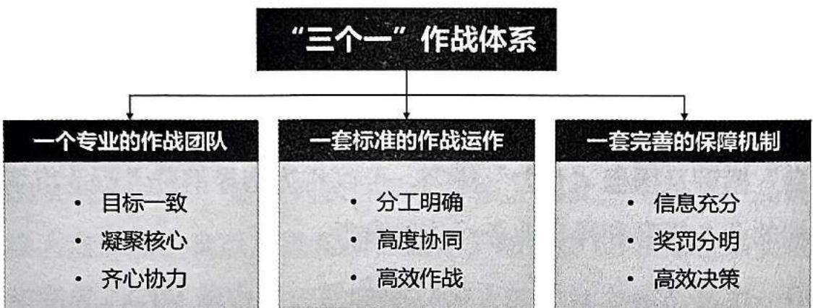
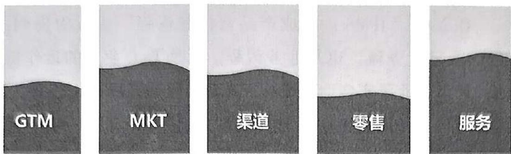
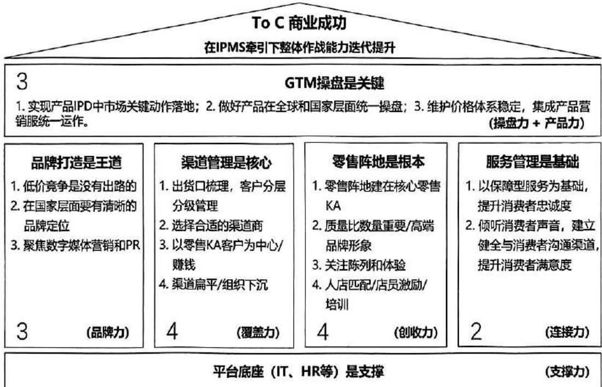
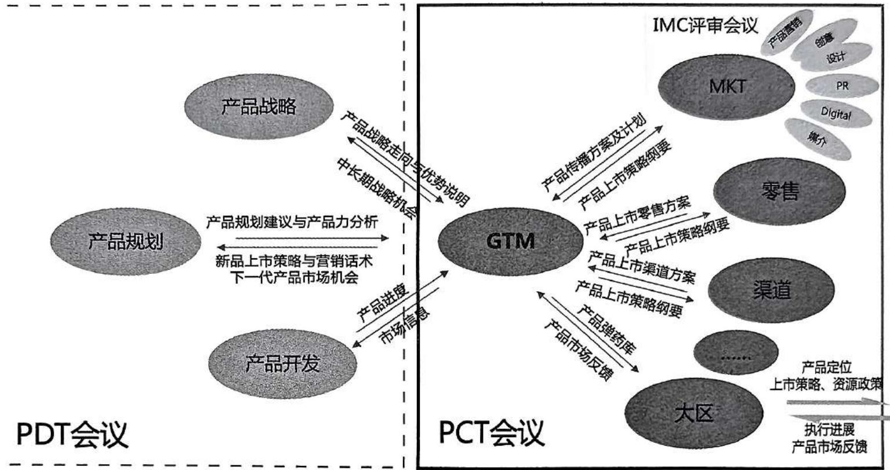
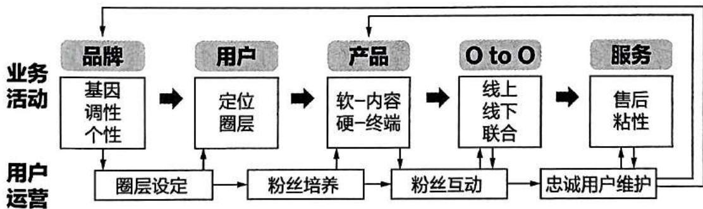
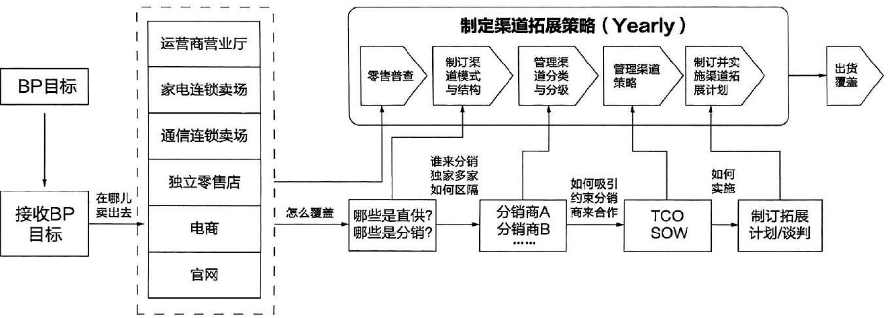
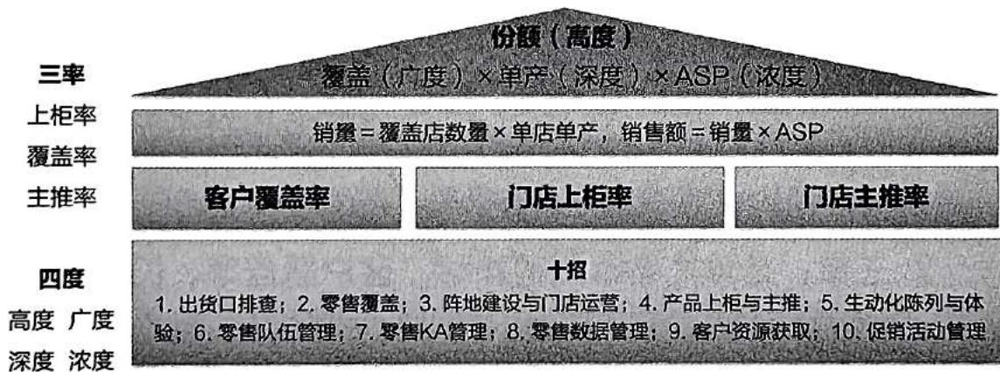
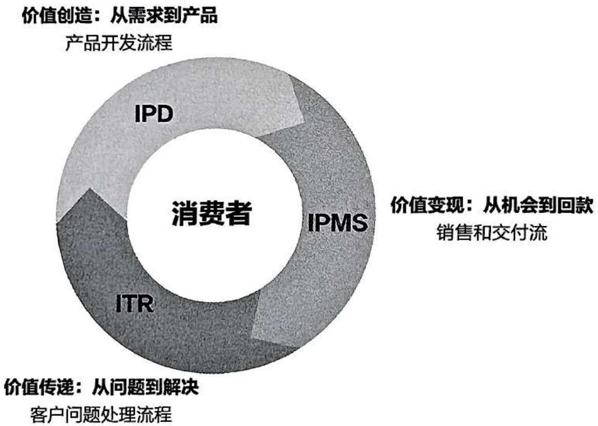
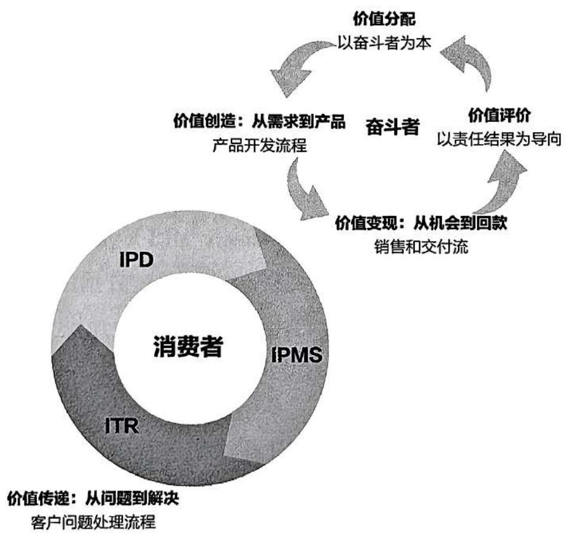

第5章 IPMS 成功要素及学习法
5.1 IPMS 成功要素——“33442 平台”及 “七力” 模型
在 2.4.2 “IPMS：集成产品营销服流程”一节中提到，IPMS既是业务流，也是业务流程，更是 To C 业务的运作机制。如果企业要实现商业成功，在营销服端必须有“三个一”的作战体系（图 5-1），才能实现“力出一孔、利出一孔、丽出一孔”。

图5-1 “三个一”作战体系示意图
在作战体系的指挥下，各职能兵种发挥各自作战能力，统一配合以打胜仗。俗话说“一将无能，累死三军”，如果将军指挥不当，各兵种的军事能力再高也不能取得战争的胜利。本书前4章一直在讨论作战体系，并从理论和实践中证明了其行之有效性。那么，如何解释有的企业学习这套操盘方法但效果不好的问题呢？其中的原因可能有很多，但很大程度上是因为各职能模块的能力不一致，导致相互配合不理想，从而不能收获理想的结果。这就如同战车，如果四个轮胎的气压不一样、那么势必会影响整车的性能，让车子跑不快、跑不直。图5-2为各职能部门能力差别图。

图 5-2 各职能部门能力差别图
因此，每个领域能力都要提升，这样才能在 IPMS 的各个“泳道”里畅游。图 5-3 是 To C 行业营销服 “33442 平台” 模型及操盘 “七力” 模型，可以作为指导消费者行业市场端的业务提升和操盘业务运作的参考。

图5-3 ToC行业营销服“33442平台”模型及操盘“七力”模型
我们需要有力量的产品操盘，那么如何获得这种力量呢？答案就是七种力量的叠加：操盘力、产品力、品牌力、覆盖力、创收力、连接力、支撑力。有了这七种力量的加持，单产品的操盘就会大获成功。有了每一个单产品的成功，公司产品的整体操盘也就是成功的，最终就能实现企业的商业成功。
5.1.1 GTM 操盘是关键——操盘力和产品力
GTM 部门的能力和业绩决定着公司的操盘力和产品力。
在本书第二章中多次提到 GTM 的角色。如图 2-11 所示，GTM 是作曲家、是填词家、是指挥家。因此，无论是产品的操大盘、操小盘以及操盘项目运作，都需要 GTM 角色来实现和完成。GTM 能力强，就表现出强大的操盘力和产品力：作曲家和填词家的角色决定了产品力，指挥家的角色决定了操盘力。GTM 的这些能力是企业实现商业成功的关键。衡量 GTM 产品操盘是否成功，可关注几个指标：产品类别排名份额、价格稳定性、产销率、产品毛利率、主推率等。
1. 实现产品 IPD 中市场的关键动作落地
GTM 部门对接 IPD 信息的交流和互动，同时带领市场、渠道、零售、服务等业务领域共同完成产品的上市，实现商业成功，如图 5-4 所示。
图 5-4 GTM 部门与其他职能部门的关系图

2. 做好产品在全球和国家层面统一操盘
总部 GTM 和国家 GTM 有不同的定位，二者通过产品统一操盘实现协同。
-
总部 GTM 基于产品的全生命周期进行操盘，定位为产品的销售负责人，承担产品的经营责任；站在产品的视角推动地区部、国家达到单产品的商业成功；规范从单产品的市场机会点生成到生命周期结束的全流程市场整体操盘管理。
-
国家 GTM 基于国家维度进行操盘，是国家产品经营的责任人，定位为国家经理的副手；审视公司的产品路标，根据国家市场需求规划产品，确认本地产品路标，承接总部的产品上市计划，确保在国家层面的销售成功；总部 GTM 与国家 GTM 通过产品操盘进行耦合。
3. 维护价格体系稳定，集成产品营销服统一运作
这是 GTM 部门的职责所在，即维护产品量价，协同作战，实现产品商业成功：
-
根据产品特点、目标定位等，明确产品卖点，组织制定产品上市策略。
-
进行实施过程监控，拉通研发、营销、销售、交付等各环节进度，跨部门整合协调，确保新品按期上市，并对产品生命周期全过程进行管理。
-
进行产品操盘管理，根据市场走向，组织制定整体目标并分解到渠道，协调达成整体销售目标，进行销售情况跟踪、复盘等。
-
进行生产供需协调，拉通商品计划，确保产品按期
交付。
- 进行控货控价管理，最大化产品收益。
5.1.2 品牌打造是王道——品牌力
营销部门的能力和业绩决定着公司的品牌力。
随着社会生产力的不断进步和社会经济的持续发展，市场上大多数消费品的供求关系经历了从供不应求到供需平衡，再到供大于求的转变；企业销售人员的关注点也从“产品为王”“终端为王”，逐渐转变为“用户为王”（以消费者为中心），营销模式也随之发生了相应的演变：
-
产品阶段：供不应求，产品为王，聚焦在产品功能，采用 4P 策略（产品、价格、渠道、促销）。
-
传播及定位阶段：供需平衡，终端为王，聚焦渠道广覆盖及消费者需求，采用 $4 \mathrm{C}$ 策略（顾客、成本、方便、沟通）。
-
价值营销阶段：供大于求，物质丰富，用户为王，聚焦消费者关系及社会圈层，采用 $4 \mathrm{R}$ 策略（关联、反应、关系、回报）。
关联：企业必须通过某些有效的方式在业务、需求等方面与顾客建立关联，形成一种互助、互求、互需的关系，把顾客与企业紧密联系在一起，减少顾客流失，以此来提高顾客的忠诚度，赢得长期而稳定的市场。
反应：多数公司倾向于说给顾客听，却往往忽略了倾听的重要性。在相互渗透、相互影响的市场中，对企业来说，如何及时倾听顾客的希望、渴望和需求，并及时作出反应来满足顾客的需求，这样才利于市场的发展。
关系：重视与顾客的互动关系，建立并维护良好的顾客关系。
回报：回报是营销的源泉，是企业持续发展的动力。
消费品行业营销的本质，可以归结为以与消费者的关系为导向，以消费者为本。图 5-5 是作者在 2016 年提出的消费品行业圈层经济模型。在大时代背景下，关注与重视消费者的关系，建立以圈层经济为导向的消费者服务与运营体系，是企业未来的发展之路。

图5-5 消费品行业圈层经济模型
如图 5-5 所示，企业的品牌基因、调性以及个性是对准并锁定某类消费者圈层的；通过圈层的定位开发出满足该圈层用户需求的产品（粉丝需求是产品开发前的重要信息输入），且产品的软硬件均是对准该需求设计的；通过与粉丝互动，企业积极采用线上、线下结合的方式来满足特定圈层用户人群的需求；再通过良好的售后服务，增加用户与品牌的黏性，维护好忠诚用户，建立良好的品牌口碑；通过运营维护好忠诚用户，将各种信息反馈至产品端及品牌端，再促进新需求的满足及下一代产品的开发。
企业文化和价值观决定着品牌的调性和个性，而品牌个性决定着产品的内涵。用户个性与产品内涵相互匹配，在圈层经济的今天，品牌建设与运作水平是商业能否成功的关键要素之一。
1. 低价竞争是没有出路的
品牌，简单地讲，是指消费者对某类产品及产品系列的认知程度。品牌的本质是品牌拥有者的产品、服务或其他优于竞争对手的优势，能为目标受众带去同等或高于竞争对手的价值。其中价值包括：功能性利益和情感性利益。
在消费品市场中，品牌是企业生存的根本。华为在打造品牌时强调“王道”，这主要是指华为坚持通过提升产品品质、技术创新和服务来赢得市场，而不是单纯依靠低价策略。任正非多次表示，华为决不走低价格、低成本、低质量的道路，因为这会摧毁企业的战略竞争力。
2. 在国家层面要有清晰的品牌定位
从品牌的定义可以看到，品牌是企业呈现给消费者的高于预期的价值，品牌会在消费者心里形成一个定位，这个定位是消费者对品牌方的产品或服务的一个累积印象所建立起来的。简单地说，看到或想到了品牌就想到了产品，想到了产品就想到了其价值。在国家层面树立清晰的品牌定位，有助于提升企业产品的竞争力，尤其是在产品同质化严重的今天，品牌定位对于提升产品附加值及利润空间具有重要意义。
3. 聚焦数字媒体营销和 PR
重点强调聚焦数字媒体营销和公共关系（PR），因为它们是现代企业中至关重要的两个领域，在塑造品牌声誉、提升品牌知名度和与目标受众建立联系等方面发挥着重要作用。
(1) 数字媒体营销
数字媒体营销是指通过互联网、移动设备、社交媒体、搜索引擎等渠道接触消费者的营销方式。它是一种全新的领域，区别于传统营销的模式，需要以全新的方式接触客户。数字媒体营销的发展，一方面是由于通信技术的发展，另一方面也是由于消费者行为方式的转变而不断推动的。消费者行为转变的几个趋势包括：
-
无处不在的消费场景：购买产品多渠道化、移动化、碎片化。
-
对消费品质的追求和升级：追求健康、时尚、舒适、便捷等。
-
不断增长的参与感：消费者广泛参与，甚至成为价值链的一部分。
-
从从众到追求个性：自我价值的体现驱动了个性化产品和定制服务的需求。
-
全渠道无缝融合：消费者购物渠道碎片化和数字化，线上与线下的界限越来越模糊。
-
从功能性到体验感：消费者不仅仅满足于产品功能，对体验、感知价值有新的需求。
-
圈层社交和经济：信息时代带来了新的社交方式，“圈子和部落”文化需要重视。
数字媒体营销包括多种策略和工具，如搜索引擎优化（SEO ）、按点击付费广告（PPC ）、社交媒体营销和内容营销。
(2) 公共关系 PR
公共关系（PR）是指企业通过各种沟通手段与公众建立和维护良好关系的过程。其目的是塑造和维持积极的形象，增强品牌认知度，并促进公众对组织的理解和支持。公共关系活动一般包括媒体关系管理、危机公关、内部沟通、社区活动参与、社会责任项目等。
-
媒体关系管理：新闻稿发布（新产品、新技术等）、媒体报道（发布会、专访等）、社交媒体运营（微博、微信、抖音、小红书等社交平台发布消息，与用户互动等）。
-
事件营销与活动策划：新品发布会、行业展会、赞助与合作等。
PR 举例 1：胖东来火爆出圈，一方面是因为其在“自由·爱”的文化理念下，零售业务的基础（货真、价实、真心服务、售后等）做得近乎完美；另一方面，也得益于广泛的社交媒体传播的力量。以胖东来创始人于东来为代表的内部意见领袖，通过直播演讲、个人账号运营等形式向公众阐述企业服务理念与价值观，强化了品牌的文化认知，为品牌传播奠定了价值基础。在社交媒体平台上，大量用户分享自己在胖东来购物时的细节体验，如员工主动帮忙照看孩子、贴心协助搬运重物并坚持护送至家门等。这些真实、生动的内容以用户为媒介进行广泛传播，消除了受众的怀疑心理，强化了品牌形象的可信度，吸引了更多人对胖东来的关注。
6·25 胖东来擀面皮档口卫生事件: 2024 年 6 月 25 日,有网友发视频反映称, 胖东来商场餐饮部内某擀面皮档口存在生产环境卫生问题。6 月 26 日, 胖东来对此发表声明称, 立即要求新乡两店餐饮部所有的联营商户档口关停, 并成立调查小组。6 月 27 日凌晨, 胖东来公布 “擀面皮” 事件调查报告:奖励投诉顾客 10 万元; 对所有于 6 月 9 日至 19 日期间在新乡胖东来两店餐饮部购买擀面皮、香辣面的顾客办理退款, 并给予 1000 元补偿 (共计 8833 份); 相关工作人员被辞退、免职;要求新乡胖东来擀面皮商户即日起停止营业, 并解除合同终止合作, 限期撤柜。胖东来为 “擀面皮” 事件 “赔偿” 近 900 万元。
“委屈奖”制度化：胖东来的一名员工在阻止顾客冲突时遭到掌掴，公司随即给予了3万元的补偿。这一决定不仅是为了弥补员工所遭受的身体和心理伤害，更是为了传递一个明确的信号：胖东来坚决维护每一位员工的尊严和权益，不容任何侵犯。2024年12月17日，胖东来在社交媒体上发布了一则《胖东来人格尊严补偿标准执行公告》。
以上的两个小案例在社交媒体上传播甚广，使胖东来品牌的认可度和好感度急剧攀升。人民的口碑就是品牌最好的广告。
PR 举例 2：2024 年 12 月 19 日，央视新闻频道全网直播了由中央电视台三位金牌主持人主持的中国经济引力场节目——《在一起，鸿蒙智行》。华为终端 BG 董事长余承东及“问界、智界、享界、尊界”等四位车企老总接受采访，齐聚圆桌畅谈合作、创新、理想，吸引了全网数百万的流量，起到了很好的品牌宣传效果。华为终端 BG 董事长余承东在近期也开通了微信视频号和抖音号，不断加强与用户的沟通与互动，宣传企业的品牌、文化、价值观。
PR 举例 3：肥娟小吃店由于店主夫妇的真诚赢得了同学们及顾客们的信任，2024 年底至 2025 年初火爆全网。海信集团在第一时间为肥娟小吃店赞助了一台电视，在做好事的同时抓住了一波流量，尤其是当孩子们齐声喊道 “谢谢海信” 的时候，海信的付出得到了回报。
PR 举例 4：临近春节，京东创始人刘强东向老家江苏宿迁光明村村民写了一封“拜年信”，表示将发放现金和年货。除了给老家 60 岁以上的老人发一万元红包外，还将给他上小学时所有的老师每人发 10 万元现金红包。当年刘强东拿着全村人你一分我一毛他一个鸡蛋凑起来的 501.26 元外加 76 个鸡蛋到北京上大学，他说没有众乡亲的帮助就没有他的今
PR 举例 5：天灾无情人有情
2025年1月7日9时5分，西藏定日县发生6.8级地震。震后不到5分钟，直升机已经在镇区上空盘旋；不到10分钟，15名边境民警到达灾区，徒手救出21名被困群众；不到15分钟，660人的消防队伍集结完毕，半小时后中心区域开始破拆救援；1个小时后，帐篷资源和军队车辆在318国道上连成一线，武警消防所有应急装备全部启动；5个小时后，运-20满载着官兵和物资起飞；13时，县城恢复供电；17时，公布了地区遥感图；19时，通信基本恢复；天黑之前，搭好了救灾帐篷，当晚就有了热菜热饭和新鲜水果供应；天亮之前，道路全部恢复。仅1天时间，运往灾区的救援物资基本饱和，累计救援并转移6万人。灾情发生后3天，临时板房已经搭建，用于灾后的群众安置。11日下午，西藏日喀则市定日县长所乡古荣村板房安置点第一个接通宽带、IPTV网络电视，孩子们围坐在电视机旁，说不看动画片，想要看电影《战狼》。
西藏地震发生后，很多企业也立即行动起来，履行着企业社会责任：京东在第一时间将就近的仓储物资运往灾区（京东创始人刘强东表示，当社会发生任何灾难时，京东就近的仓储经理有权利且必须把库房里面所有的货物全部捐给灾区人民）。不仅大型企业，中小型企业也纷纷伸出援手，奉献爱心。鸿星尔克捐赠价值千万元的御寒保暖及应急救灾物资；移动照明“赛道”的领导品牌傲雷（Olight），年销售额仅有10多亿元，也在第一时间向西藏灾区捐赠价值100多万元的应急救灾手电……
不仅企业，更多民众也自发组织起来奔赴灾区：韩红紧急行动，第一时间带领医疗志愿者火速驰援西藏地震灾区；兰州筷上瘾牛肉面店主马忠明自备面、肉、菜等，带领员工赶赴灾区，只为给群众做上一碗热气腾腾的牛肉面；爱心人士索朗罗布，每天为受灾群众免费提供大约500千克的藏面；次仁旺加、次仁加措、普琼达瓦、边巴扎西等4名“00后”退伍老兵自发组织驰援定日县，作为志愿者参与搜救、搭建帐篷、装卸物资等工作……
地震灾难发生后，高效的应急响应机制、强大的国家力量、优越的制度优势、团结的民族精神、开放自信的国际形象等信息，通过新闻媒体、社交媒体的传播，不仅让中国人，也让外国人看到和感受到了中国的力量。不少网友纷纷留言表示，此生无悔入华夏。
5.1.3 渠道管理是核心——覆盖力
渠道部门的能力和业绩决定着公司的覆盖力。
美国市场营销学家菲利普·科特勒将渠道定义为：营销渠道是指某种货物或劳务从生产者向消费者移动时，取得这种货物或劳务所有权或帮助转移其所有权的所有企业或个人。简言之，营销渠道就是商品和服务从生产者向消费者转移的具体通道或路径。
在 2.3 “大零售业务流程架构 Retail v1.0” 一节中，我们讲述了 To C 消费品业务场景中的渠道和零售业务框架（图 2-16）。渠道就像一个管道，将公司的产品输送到距离消费者“1 公里”的地方，使消费者可以随时触达。渠道管理工作做得好，产品覆盖率高，消费者购买的概率也大，从而对销售实现产生积极影响。下面简要介绍如何进行手机行业的渠道管理。
渠道规划、渠道模式选择及价格体系设置是渠道管理最重要的工作。图 5-6 为以手机厂商为例的渠道拓展规划示意图。
(1) 零售普查
零售普查的目的是掌握市场的第一手渠道和零售资料，用于指导渠道和零售阵地建设，规划相应的资源投资。具体做法是了解区域内有哪些渠道商、零售商与零售店，对店铺和商家进行匹配，并对渠道商和零售商进行排名；然后再根据市场容量制定销售目标，参考竞争对手现状、渠道特性等，制定相应的渠道和零售发展策略。零售普查的范围是大国到省，小国到全国。普查方式包括：扫街（销售员调查）、分销商提供、第三方报告等。
简单理解：知道产品在哪儿能卖出去。以手机厂商的渠道为例，包括运营商营业厅、家电连锁卖场、通信连锁卖场、独立零售店、电商、官网等。

图 5-6 以手机厂商为例的渠道拓展规划示意图
(2) 制定渠道模式与结构
现在有了整个区域的商家和店铺数据库，接下来需要解决的是如何覆盖的问题。是采取分销还是直供？哪些是分销？哪些是直供？需要决定渠道的模式与结构。
(3) 管理渠道分类与分级
确定渠道模式后，要对分销商和零售商进行选择，考虑由谁来分销、是独家还是多家、如何区隔等问题。对渠道进行分类与分级管理。
客户类型：分销商、零售商、运营商、电商、行业客户、授权服务中心等。
客户分级按照销售能力、合作意愿等标准，可以分为金牌、银牌，或核心、重点、普通等。
(4) 管理渠道策略
渠道商是合作伙伴，因此要有相应的吸引及约束条款来指引合作。制定 TCO 与 SOW 。
(5) 制订并实施渠道拓展计划
在实施过程中要注意几点：第一，对分销商和零售商进行有效管理，只有管理好 Sell through，才能真正管理好 Sell out；第二，要特别管理好零售 KA（Key Account，意为核心客户）客户，因为他们是产品的主力出货口；第三，为了管好各层级的商与店，需要企业的组织架构与之匹配，渠道要扁平化、组织要下沉。
2. 三种典型渠道模式
目前手机行业比较典型的渠道模式为: ND 模式、FD +KA 模式以及 DRP 模式。
3. 价格体系设置
价格体系设置是渠道管理的重要工作。价格设计原则：在一定区域内指导零售价统一，保证渠道商和零售商的利益。
做好渠道工作的 “WELL” 原则：
-
Workable：可行的、行得通（渠道是可行的、行得通的，覆盖有效——规划与拓展）。
-
Executive：经营管理的、有执行权的（渠道是可被管理的、被执行的——目标绩效、PSI、TCO等）。
-
Look back：回顾、回头看（渠道要被回顾及评价——数据回顾分析、SMR）。
-
Loyalty building：忠诚度建设（渠道是忠诚的——激励与联合营销）。
5.1.4 零售阵地是根本——创收力
零售部门的能力和业绩决定着公司的创收力。
在 2.4.2.4“IPMS 与零售关系”一节以及 4.2.2.4“零售策略”一节中，我们简要介绍了零售的定义以及零售管理的三要素。为什么说零售阵地是根本，是创收之源呢？因为在零售业务层面，企业与消费者是直接面对面的。通过零售活动，厂商的销售人员凭借专业的知识、热情的服务来吸引、打动消费者，从而实现产品的销售。华为能够在 10 年的时间内将智能手机年出货量从 300 万部（2010 年）飙升至 2 亿部以上（2019 年），意味着每秒钟就有 6.3 部华为手机通过零售门店、经由促销人员之手销售到消费者手中。这种提升离不开华为强大的零售基础管理能力的支撑。
零售的三率四度十招

图5-7 零售业务的三率四度十招
零售胜利公式
销售额 = 销量 × ASP = 覆盖店数量 × 单店单产 × ASP
公式解释：销售金额等于零售门店数量、单零售门店的销量、产品的平均单价三者的乘积。举例：手机的平均单价为2000元，单门店每月销售50台，一共有1000个门店，则月手机销售额为1亿元。同时，销售额越高也意味着市场占有率越高（市场份额）。
- 四度: 高度 (市场份额)、广度 (门店覆盖)、深度 (单店单产)、浓度 (ASP)
-
高度是指某个品牌销量在整个市场中的占比，其数值表现出该品牌在市场中的地位高低。
-
广度是指某品牌所有产品在国家或地区市场上柜销售并产生销量的最大门店数，通常称为“有效覆盖门店数量”。
-
深度是指某品牌所有有效覆盖门店的月度平均销量，通常是用该品牌月度总销量除以有效覆盖门店数量得出。
-
浓度是指某品牌月度各产品平均交易零售价，用来衡量该品牌的议价能力和盈利水平。
以上数据均来源于第三方报告。
- 三率：是单产品维度的指标，客户覆盖率、门店上柜率、门店主推率
- 客户覆盖率是指从单产品维度来看，产品上市前需要根据销售目标进行客户层目标分解，规划该款产品需要覆盖的客户数量，然后在产品上市后进行客户实际覆盖数量的对比，以此来监控该款产品客户覆盖进度的达成情况。
客户覆盖率计算公式
$$ \mathrm{客户覆盖率} = \frac {\mathrm{实际客户覆盖数量}}{\mathrm{规划客户覆盖数量}} \times 1 0 0 $$
- 门店上柜率是指从单产品维度来看，产品上市前需要根据销售目标进行客户的门店层目标分解，规划该款产品需要上柜的门店数量，以此来监控该款产品门店上柜进度的达成情况。
门店上柜率计算公式
$$ \mathrm{门店上柜率} = \frac {\mathrm{实际上柜门店数量}}{\mathrm{规划上柜门店数量}} \times 100 $$
- 门店主推率是指从单产品维度来看，为达成产品上市和中期销售的良好表现，需要对产品从客户层面和门店层面进行主推的要求，通过对门店的走访或暗访得出所覆盖门店主推情况。
门店主推率计算公式
$$ \mathrm{门店主推率} = \frac {\mathrm{实际主推门店数量}}{\mathrm{规划主推门店数量}} \times 1 0 0 \% $$
3. 十招
-
第一招：出货口排查。即零售普查，要掌握可用于销售产品的所有门店和客户的信息；
-
第二招：零售覆盖。根据销售目标及推广规划，覆盖零售门店；
爆品操盘GTM
-
第三招：阵地建设与零售门店运营；
-
第四招：产品上柜与主推；
-
第五招：生动化陈列与体验；
-
第六招：零售队伍管理；
-
第七招：零售 KA 管理；
-
第八招：零售数据管理；
-
第九招：客户资源获取；
-
第十招：促销活动管理。
做好零售的方法很简单，只要抓好“三率四度”，做好十招就可以了。但是，简单的方法能够真正地落地、真正地触动消费者的心是最难的。因为零售关注的是细节，零售做的是人的工作，因此更是难上加难。虽然难，但是只要认真做、真心做，每天进步一点点，随着时间的积累，就能实现质的飞跃。
夯实零售，聚焦价值客户、价值店面、价值区域，
实现可持续增长
强化执行，做实客户管理，运营管理，作业管理，实行职业化运作
做好零售工作的“RETAIL”原则
-
Relationship：关系（零售是人与人、人与物、人与空间的联结，是做好零售的基本原则）；
-
Evolution：进化、演变（零售是将消费者转化为品牌忠诚者的过程——转化率）；
-
Together：共同（消费者不仅购买一款产品，同时还带
走更多的产品和服务——连带率）；
-
Attractive：有吸引力的（零售是营造一种氛围，吸引消费者进入品牌——进店率）；
-
Impressive：印象深刻的（让消费者对品牌有深刻的印象——认知率）；
-
Loyalty：忠诚（消费者对品牌忠诚，重复购买——复购率）。
5.1.5 服务管理是基础——连接力
服务部门的能力和业绩决定着公司与消费者的连接力。
“华为是一个功利集团，我们一切都是围绕商业利益的。因此，华为文化的特征就是服务文化，因为只有服务才能换来商业利益。我们只有用优良的服务去争取用户的信任，从而创造资源。”“华为公司只有一个鲜明的价值主张，那就是为客户服务。”“我们还要学习苹果公司的服务体系，我们要让消费者自动把钱拿出来，服务也是最重要的一个环节。”这三句话分别摘自任正非在1997年、2009年、2017年不同会议上的讲话。可以看出，在这跨越20多年的各次讲话中，“以客户为中心、用心为客户服务”作为华为的宗旨从来没有变化过。在华为发展早期，甚至为了客户售后服务的响应，把好的设备拆卸成零部件以满足维修需求；服务工程师随时响应，随叫随到，曾经发生过服务部门员工在海南休假时，一个电话打来，一身夏装就直奔冬季东北三省的例子。图 5-8 所示是以消费者为中心的业务流和价值流的示意图。可以看到，服务是企业愈发不可或缺的重要一环。
-
价值创造：集成产品开发流程（IPD）实现的是从消费者需求到产品的诞生。
-
价值变现：集成产品营销服流程（IPMS）实现的是从市场机会到产品的销售、回款。
-
价值传递：从问题到解决（ITR）实现的是从客户问题到完美解决、消费者满意。

图5-8 以消费者为中心的业务流和价值流
彼得·德鲁克说：“商业的目的在于创造和留住顾客。”在当今社会，各企业服务部门的重要性不言而喻，服务也是生产力。如果消费者对企业、对产品是满意的，那么服务部门就是锦上添花，消费者的满意度、NPS也就越高；如果消费者对企业或对产品是不满意的，甚至还带着一肚子怨气，那么服务部门就是企业重新赢得消费者信任、获得良好口碑的最后一道关口。NPS在消费品行业中代表“净推荐值”，是一种衡量某个客户将会向其他人推荐某个企业或服务可能性的指数，目前是最流行的顾客忠诚度分析指标。现在，由于我国经济发展、人民生活水平的提高，很多行业和产品已经从增量市场转变为存量市场，手机主要以换机需求为主。在这种情况下，高NPS、高口碑对一个品牌来讲是至关重要的，极端情况可能决定品牌和企业的生死。
1. 以保障型服务为基础，提升消费者忠诚度
夯实基础性、规范化的服务能力，关注消费者满意度。
2. 倾听消费者声音，建立健全与消费者沟通渠道，提升消费者满意度
多渠道获取消费者声音并进行闭环管理（客服热线、传统媒体、数字媒体、会员管理、线下服务中心等），并在第一时间对消费者反馈进行解决、处理，保证沟通畅通，有效提升消费者的满意度，实现用户忠诚。
5.1.6 平台底座是支撑——支撑力
平台底座的能力是业务的支撑力。
任正非说，华为的潜力在管理，华为有强大的平台支持能力。从 1997 年开始，华为通过与世界级管理咨询公司的长期合作，在研发、供应采购、销售服务、人力资源管理、财务管理和质量运营 IT 等方面系统性引入业界领先实践，并与华为实际相结合，形成适合华为的“以客户为中心、以奋斗者为本”的管理体系，构筑了华为的核心竞争力。这些能力也为 IPMS 宏零售的业务运作提供了强有力的支撑。
华为已与全球知名的咨询顾问团队基本开展了合作，涉及人力资源体系、战略管理、市场体系、研发体系、供应链体系、财经体系、质量管理体系等：
-
IBM：BLM 模型、绩效管理 / 干部管理体系、IPD（集成产品开发）、ISC（集成供应链）、IFS（集成财经变革）；
-
MERCER：组织设计；
-
HayGroup：职位体系、薪酬体系；
-
AON Hewitt：人力资源三支柱模型；
-
Accenture : LTC 变革;
-
PwC：财务体系建设；
-
SIEMENS：六西格玛质量管理；
-
TOYOTA：精益管理。
这些管理流程体系解决了效率问题，构建了华为强大的业务平台。在华为向公开市场转型时，就是基于此完善的管理流程体系的大平台发力的，有效支撑了 To C 业务变革。
人才
打仗需要人，打胜仗更需要人，特别是对人才的需求。华为一直坚持“以奋斗者为本”的企业文化。积极进取、持续奋斗的员工是公司最宝贵的财富，也是华为得以实践“以客户为中心”战略的核心保障。公司在成长机会、薪酬待遇等方面向奋斗员工倾斜，“让火车头加满油”，必须使奋斗者得到及时、合理的回报。华为建立了双重任职资格体系，员工可从管理、专业两个方面获得个人的职业发展通道；还建立了完善的培训体系，满足奋斗者对学习的需求。华为公司也高度重视员工的身心健康和内部组织氛围的和谐，成立了专门的员工健康指导中心，并设立了首席员工健康与安全官，为员工提供完善的保障，使员工能够身心愉快地工作，在组织成功的同时，实现自己的价值。从价值创造到价值变现，再到价值评价，直至价值分配，形成十分正向的价值循环（图5-9）。

图5-9 以奋斗者为中心的价值评价和价值分配
IT 系统
数字化在 IPMS 流程中发挥着巨大的价值。为了支持业务开展、操盘过程的落地，需要大量数据进行支撑：
-
例如，在市场洞察时，需要收集和分析海量的市场数据，帮助企业了解消费者需求、偏好以及竞争对手情况等，使产品定位和功能设计更贴合市场；
-
营销资源利用及效率可以实时监控，促进资源的合理调配；
-
在销售跟踪时，数字化系统可以实时监控库存、销售数据等，便于企业及时调整生产和营销策略，优化资源配置，提升整体运营效率。
企业为此构建了大量的 IT 系统用于管理，例如用于 PSI 管理的进销存系统（PSI 系统）、活动管理平台（iMarketing 系统）、零售门店作业管理系统（iRetail 系统）、企业资源平台（Enterprise Resource Planning, ERP）、管控一体化系统（Management-Control Integration System, MCI）、区域营销费用流程等。这些系统最后整合关联起来，通过数据的流动、信息的互联互通，形成了整个 IT 管理体系，有效地支撑了 IPMS 业务的开展，助力企业在市场竞争中占据优势。
5.2 学习及落地 IPMS 避免踩的坑
1. 全面照搬引进 IPMS 而不考虑企业实际情况
不能完全照搬，就如同 IPD 流程一样，IPMS 流程也有其适用的企业类型：
-
以产品为核心的企业：一般依靠产品创新迭代来维持市场竞争力和长期发展，如通信、家电、厨电等企业；
-
技术门槛高、产品开发周期长的企业：对产品质量要求高，研发周期长的企业；
-
产品集成功能多、复杂度高：硬件、软件、互联互通等复杂程度高，协同要求高的企业，例如手机、汽车等制造商。
参考 IPD 流程的适用性，因此，引入 IPMS 时要视企业具体情况而定，引入后要审视业务及业务流程，对 IPMS 的若干阶段相应地进行裁减、适配。尤其是中小微企业，可能需要有 GTM 操盘，但不一定要完全拷贝。如果生搬硬套，可能会造成效率低下、资源浪费的情况，得不偿失。例如，有些角色可能不必设置专门岗位人员负责，由一个岗位承担几个角色也是可行的。
2. 直接上马，“松土”不足
有些企业一上来就直接在公司推行 IPMS 流程，调整组织、调整岗位、调整职责。在员工尚未意识到变革的必要性和重要性时，就急于上马，前期“松土”工作不足，这可能会导致项目的失败。另外，有些企业属于偏技术型的公司，研发体系中大多数是工程师，他们往往有着技术情结，因此也需要引导他们从技术导向转变为以消费者需求为导向。因此，在导入新流程、新项目时，一定要遵循变革的方法，先做好前期的“松土”工作，提升全员的变革意识，争取获得全员的支持，这样项目才能顺利推进。例如，华为在向公开市场转型时，开展了“万人站店”项目，要求消费者业务（BG）的人员都要去零售门店当一天店员，与消费者面对面交流，通过站店活动，很好地扭转了全员对消费品行业的认知。
2012年5月，终端公司EMT 成员率先在深圳华强北华为体验店开展站店实践，并对终端的管理者提出站店要求。经过一个多月的“试水”，终端“万人站店”实践于2012年7月全面铺开。截至2012年12月底，终端管理者、关键岗位员工、销售、MKT类新员工、集团志愿者等共计1300余人参与了站店实践。“万人站店”活动已成为管理者及干部的必修课，用于建立终端意识、终端文化。通过站店与消费者零距离接触，倾听消费者的声音，这是最好、最直接有效的方式。
通过站店，来自研发、产线、品牌、MKT等不同部门的人很快会发现一些在公司里发现不了的问题。“消费者关注的点不是我想象中的啊！”一位负责研发的同事感叹道，“我们的手机最薄，手感最好，但是消费者说不在意这些，觉得我们的手机设计不好看。”还有消费者说：“你们的促销活动不给力，促销礼品也完全吸引不了我们！”“包装盒是白色的，容易脏。”……市场的这些反馈让有些人备受打击，因为之前日夜攻坚才设计出自己满意的产品，但没想到消费者不买账。各部门逐渐意识到要贴近消费者，考虑消费者的需求和想法，不要自己想当然地去开发产品。摆在终端面前的，还有更多挑战，从店面设置、柜台位置、外观设计、机模和真机的摆放、广告设计、促销策略、品牌推广到产品设计、营销节奏、铺货渠道，再到各环节的利益分配……“2C”（To C）真是一门系统化的大学问。
3. 全面推广，无缓冲节奏
前面章节提到，IPMS 既是业务流，又是业务流程，也是运作机制，因此涉及的组织部门极多，业务复杂度极高。如果不按照变革方法来推进，可能无法达到预期效果，甚至南辕北辙。
以华为 IPD 项目为例，1999 年 3 月启动 IPD 变革项目：
-
第一阶段，IBM 顾问花费大量时间深入调研后完成设计方案。
-
第二阶段，2000 年 5 月，第一个试点 PDT 项目正式启动。经过 1 年时间，次年 4 月份正式向市场发布产品。通过试点，验证了 IPD 的流程和方法，同时在试点过程中不断优化相关流程。
-
第三阶段，在 30% 的研发项目中推行 IPD 流程。
-
第四阶段，100% 项目落地 IPD 流程。
就这样，历经4年时间的打磨，2003年华为的产品开发模式全部切换到 IPD。正是有了之前若干项目变革经验的积累，华为 IPMS 流程推行才相对顺畅。
4. 各职能领域能力短板严重，跑不动
在本章节开篇就讲述了，如果各职能部门能力不一致，将导致流程运行不顺畅或无法运行，如图 5-2 所示。因此，一方面要进行 IPMS 流程建设，另一方面相关职能领域的能力也要逐步加强。
举例而言，首销要保证货品按时到位，零售门店要实现一夜换装，这就是一种零售能力。如果要实现“一夜换装”，背后要付出大量辛勤的劳动。
在郭平所著的《常青与长变》一书中，通过描述 IPD 变革时的场景就可以很好地说明这个问题。
IPD 变革的关键就是要实现流程端到端打通。IBM 各功能部门的能力很强，只要端到端打通流程、职责定义明晰，就可以带来管理效率的提升。华为当时的能力严重不足，IPD 流程涉及的各功能部门能力参差不齐，根本无法顺畅地将 IPD 流程运行起来，严重影响全流程运作效果。因此成立 FE 项目，针对研发、销售、技术服务、采购、制造、供应等主要的功能领域提升能力。每个功能领域都会设置若干子项目，子项目都很具体，2~3 个月就可以达成目标。比如在技术服务领域就有可服务性、技术资料编写、开试验局、项目管理等能力提升项目。这样持续推进差不多两年时间，沿着 IPD 流程逐步汇聚组织能力，这样才真正把 IPD 流程执行好。
5. 变革短时间没有效果，失去信心
有很多案例显示，当流程推行一段时间后，大家感觉效果不明显，然后就不了了之了。如果在余承东领导下的华为消费者业务向公开市场转型的初期也是这样，那么就看不到现在的成功了。变革需要志向、需要意志、需要智慧、需要胸怀，才能无往不胜。如何变革成功的答案就是余承东在2013年7月21日的微博所发的内容：“1. 能走多久，靠的不是双脚，是志向，鸿鹄志在苍宇，燕雀心系檐下；2. 能登多高，靠的不是身躯，是意志，强者遇挫越勇，弱者逢败弥伤；3. 能做什么，靠的不是双手，是智慧，勤劳砥砺品性，思想创造未来；4. 能看多远，靠的不是双眼，是胸怀，你装得下世界，世界就会容得下你！”